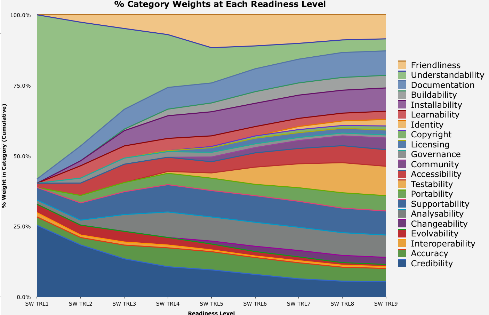
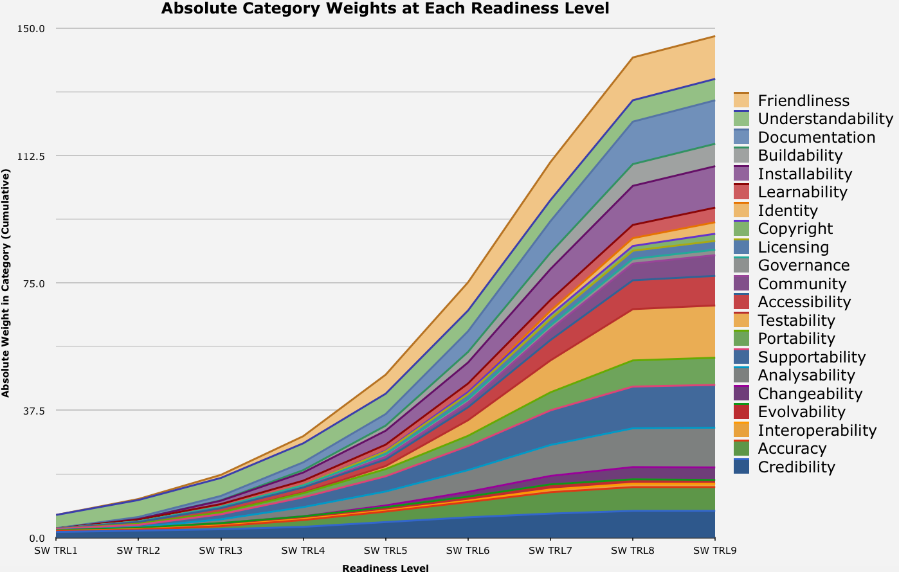

TRL Spreadsheet
Category Weights by TRL Level
See the final report, provided by John Graybeal, and presentation. Provided here for easier access.
Brief context: this is a combination of the Software Sustainability evaluation criteria and the NASA AIST TRL. For our current discussions, it is a useful starting point to ask what’s missing, what is a generic readiness progression, what can be evaluated, etc.
See the Criteria for the complete list of evaluation questions with weights by TRL for the blow-by-blow. These are provided with the Hypothes.is annotation overlay if you would like to comment directly on a criteria or weight.
Split by subcategory:
- Fitness: Accuracy
- Fitness: Credibility
- Sustainability: Copyright
- Sustainability: Accessibility
- Sustainability: Analysability
- Sustainability: Changeability
- Sustainability: Community
- Sustainability: Evolvability
- Sustainability: Governance
- Sustainability: Identity
- Sustainability: Interoperability
- Sustainability: Licensing
- Sustainability: Portability
- Sustainability: Supportability
- Sustainability: Testability
- Usability: Buildability
- Usability: Documentation
- Usability: Friendliness
- Usability: Installability
- Usability: Learnability
- Usability: Understandability
The Google spreadsheet (comment only)

